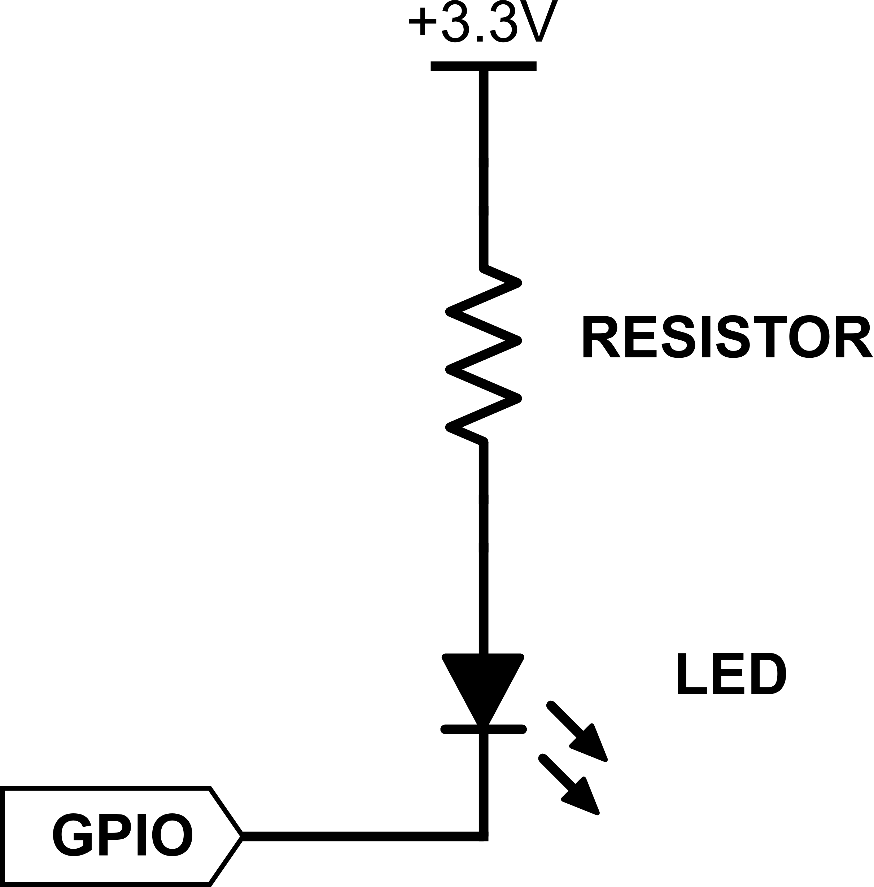
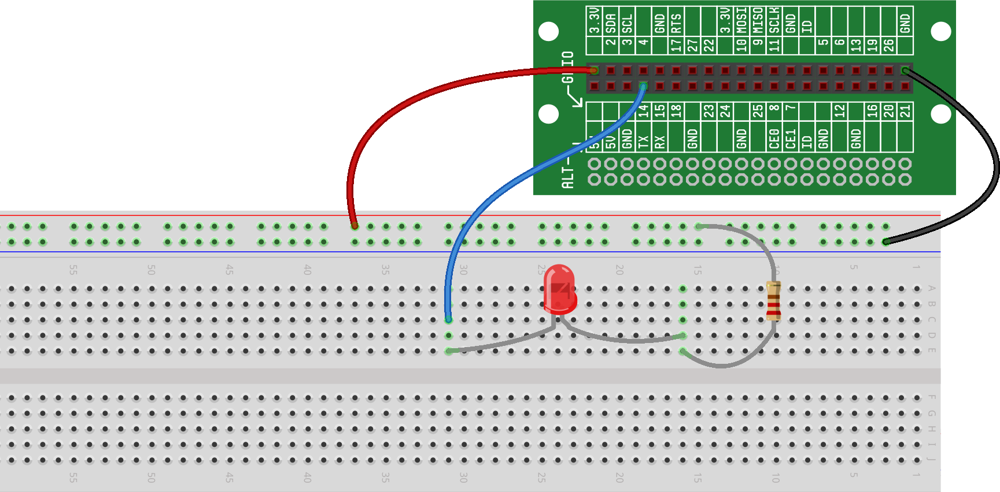

In the previous project, we created a circuit that allowed us to control an LED using a pushbutton -- solely using hardware. But, the most fun and exciting part of the RaspberrySTEM CREATOR Kit is the integration of the software and hardware, and more specifically, using software to control the hardware to make it do interesting and useful things.
In this project, we'll rebuild a version of our original circuit (with just the power source, LED and resistor), but we'll the wire up LED a little differently and then write some code to control it -- our goal will be to harness a feature of the Raspberry Pi called General Purpose Input/Outputs (GPIOs).
GPIOs are specific pins (little metal "legs" on the bottom or sides of a computer chip) that provide a connection between a physical circuit and the software inside the chip. We make these connections to the computer chip available on the RaspberrySTEM CREATOR Kit by plugging wires into the Lid Connector Board holes. GPIOs are like the nerve-system of the platform – their job is to relay signals from the brain (the Raspberry Pi computer) to the muscles (the components of the circuit) and to take signals from the muscles and relay them back to the brain.
The Raspberry Pi has 26 GPIOs, and each one can be set to act as an input (it can take a signal from an external device and relay it to the Raspberry Pi) or an output (it can relay a signal from the Raspberry Pi to an external device).
GPIOs are referenced by number (for example, GPIO17), and each pin (hole) on the Lid Connector Board is labeled with the GPIO it is connected to. So, if you want to hook up a component to GPIO17, you'll insert a wire from the component to the hole on the Lid Connector Board labeled "17".
The Lid Connector Board was designed to make connecting to the Raspberry Pi pins cleaner and easier. In fact, the whole purpose of the ribbon cable and the Lid Connector Board is simply to bring the GPIO pins (and other pins) from the Raspberry Pi to the RaspberrySTEM Lid, where they are easier for you to attach your components to.
But, if you had a Raspberry Pi computer without the RaspberrySTEM CREATOR Kit, you'd still be able to get access to the Raspberry Pi GPIOs. The GPIOs are made available through the pins on the Raspberry Pi (the pins that the ribbon cable is attached to). If you were to remove the ribbon cable, you could connect wires directly to the Raspberry Pi GPIO pins and attach them to the breadboard (or to your components) directly.
When a GPIO is configured as an output, the software has the ability to set the GPIO to do one of two things:
Set the voltage to 0V (so that it acts just like a ground)
Set the voltage to 3.3V (so that it acts just like a battery or some other power source)
By switching the GPIO “on” or “off,” it can be used to control components on the breadboard or elsewhere.
As a very simple example, you could hook a GPIO to an LED, and then control whether the LED was turned on or off by turning the GPIO on or off. In fact, since we’ve already built a circuit with an LED, why don’t we modify it to use a GPIO so that we can control that LED through software…
Here is the schematic from our original circuit:

To attach the LED to a GPIO, we’re going to modify our circuit as follows:
You’ve probably noticed that all we did was replace the connection from the LED to ground with a connection from the LED to a GPIO. Let’s see how this will work…
We’ve already discussed that the software can force the GPIO into one of two states:
Set the voltage to 0V (so that it acts just like a ground)
Set the voltage to 3.3V (so that it acts just like a battery or some other power source)
If the software sets the GPIO to 0V (we call this setting the GPIO “low”), the GPIO acts just like a ground, and the LED will light up just like it currently does. But, if the software sets the GPIO to 3.3V (we call this setting the GPIO “high”), the LED will not light up.
If that’s confusing, think back to our earlier discussion – electricity will only flow between two points where there is a voltage difference. If there is 3.3V on one side of the circuit coming from the power source and there is 3.3V on the other side of the circuit coming from the GPIO, there is no voltage difference between the beginning and end of the circuit, and no electricity will flow (i.e., the LED won’t light up).
Here is an overview of how the GPIO will work in this circuit:
|
|
| Schematic: GPIO set high (LED off) | Schematic: GPIO set low (LED on) |
You may have noticed in the images above that, to turn the LED on, you need to set the GPIO low (0V, Ground). And, to turn the LED off, you need to set the GPIO high (3.3V, Power). Clearly, this sounds a little reversed, but you can see from the images above that this is how it works. It is a reversed way of using a GPIO, but it's pretty common. And it's called "Active Low." A GPIO that is Active Low is turned "on" when the GPIO is set low, and "off" when the GPIO is set high.
The reverse of this is called "Active High" -- a GPIO that is Active High is turned "on" when the GPIO is high, and "off" when the GPIO is low.
Before we start the new wiring for this project, let's wire up our original circuit from the RASPBERRY PI POWER project -- this will give us some context so we can understand how we're going from that circuit (which uses strictly hardware to control the LED) to our new circuit (which uses a GPIO to control the LED). As a reminder here is what that circuit looks like, and how you'll want to wire your breadboard right now:

The LED should now be lit.
Now that we have some background on how GPIOs work and how we can control our LED with a GPIO, and now that we've wired up a circuit that we're familiar with, let's jump in and start using GPIOs...
The LED is currently connected to ground via the green wire. To disconnect it,
remove the green wire:

The LED should no longer be lit.
Now, connect a wire from the LED to a GPIO as shown in the diagram.
For this project, we will assume that you’re using GPIO14 on the Lid Connector Board, though you’re welcome to use any GPIO -- just remember that you’ll just need to modify the code appropriately if you choose a GPIO other than 14 for this project.
This is what your breadboard should now look like:
You will probably notice that the LED is not lit at this point, even though we've hooked it up to the GPIO. The reason for this is that the GPIO, by default, reads a high voltage. As we discussed above, if the GPIO voltage is high, there is no voltage difference across the LED, and as a result no electric current will flow -- the LED will not light up.
The code we're about to write will set the GPIO voltage low (ground, 0V). When the GPIO is low, current can flow through the LED, because there is now a voltage difference across the LED.
These concepts can be a bit confusing at first, but as you use GPIOs more and more, the concepts and the conventions should become clearer.
Now that our circuit is complete, let’s write the software.
The code to control the GPIO (and with it the LED) is pretty short. It uses a function called Output() to configure a GPIO as an output.
Type (or cut-and-paste) the following code into the your RDE’s Code Window:
At this point, we don't expect you'll fully understand the code above. However, there are a couple important ideas to notice in the code:
In Line 2: We're configuring GPIO 14 as an output.
In Line 3: We're turning the LED on.
To help you understand how we wrote this code, take some time to refer to the new concepts introduced in this section (see the header at the top of the page). We'll look at this code again in more detail in upcoming projects.
Run the code the same way you did in the HELLO, WORLD! project – press the Play icon above the code window. Assuming you did everything correctly, the LED should now be lit.
Congratulations! You just controlled some hardware you built using software that you wrote.
Assuming everything worked properly in the previous step, feel free
to play around with the circuit and the code. Try changing from
GPIO14 to a different GPIO (make sure you change the code to reflect
the new GPIO). Or try turning off the LED by replacing the my_led.on()
statement with: